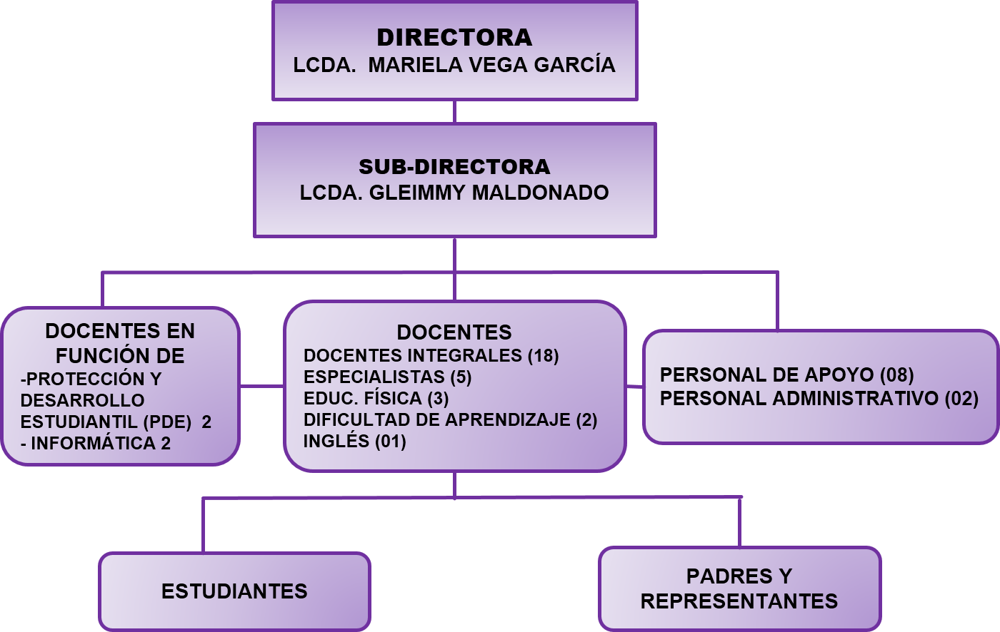

Organigrama

La Escuela Municipal San José, es una institución, que brida una educación integral y de calidad a los estudiantes entre 6 y 12 años de edad, mediante Proyectos de Aprendizajes y Planes Especiales, fundamentados en las necesidades de los educandos, los programas de estudio del nivel de primaria y el propio contexto, ofreciendo aprendizajes significativos, permitiendo el desarrollo tanto de competencias intelectuales, como científicas, sociales y actitudinales, al igual que destrezas y aptitudes físicas básicas, el fortalecimiento de las habilidades sociales y la práctica constante de valores humanos, fundamentales para comprender el medio social, cultural y natural, preservar la salud y el ambiente, mantener la buena convivencia social, el disfrute del ejercicio físico y la recreación para el gozo ylogro de individuos integrales, responsables y saludables para la sociedad.
La Escuela Municipal San José, es una institución pionera a nivel educativo que pretende mantener sla calidad educativa, donde el trabajo colaborativo y comprometido de padres y maestros fomente en todos alumnos los valores de responsabilidad, honestidad, respeto y solidaridad, formando así, individuos con competencias sólidas para desempeñarse con éxito en los distintos ámbitos de la vida, de manera eficiente y comprometidos con su actuar.Logrando una educación integral, con la finalidad que los estudiantes alcancen su autorrealización humana y desarrollen spensamiento crítico y analítico actitudes positivas, así como, aptitudes motrices, habilidades y destrezas. Siendo modelo permanente dentro de la comunidad y región.
Promover diversas estrategias de organización y ejecución que fortalezcan los espacios de aprendizaje, reforzando tanto los valores humanos, sociales como las medidas de prevención, higiene y seguridad para preservar la vida, así como la recuperación de espacios prioritarios donde se involucren todos los que participan en el quehacer educativo de la Escuela Básica Municipal San José, a través de diferentes actividades y comisiones de trabajo, con la finalidad de lograr la formación integral de los y las estudiantes.
| # | Datos | |
|---|---|---|
| 1 | Nombre del Plantel | Escuela Municipal San José |
| 2 | Dirección | Calle 9 entre carreras 9 y10 Nº 9-32 Centro |
| 3 | Ciudad | San Cristóbal |
| 4 | Entidad Federal | Táchira |
| 5 | Región | Los Andes |
| 6 | Código DEA | OD01472023 |
| 7 | Código Estadistico | 200810 |
| 8 | RIF | J-30446481-9 |
| 9 | Dependencia | Municipal |
| 10 | Total de Personal | 45 |
| 11 | Estudiantes | 307 |